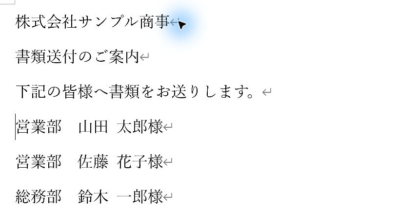
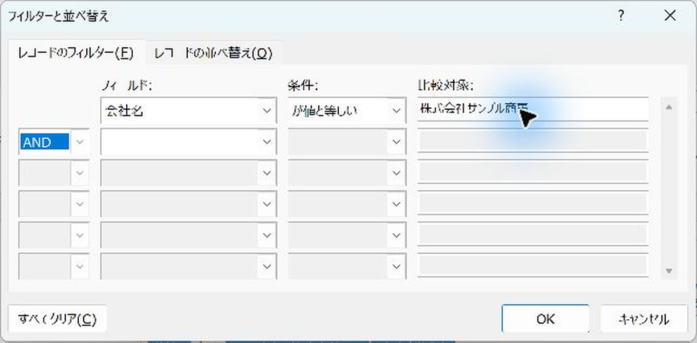
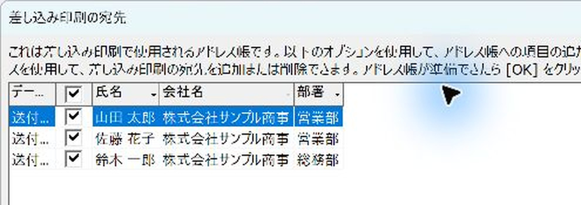

Word差し込み印刷で会社ごとに1枚の送付状を作る方法
会社で絞って1社ずつ作る方法と、会社1行の表でまとめて出す方法を案内します。
少数の会社なら、会社名で絞って「名簿」で担当者を並べ、完成文書に送付文を足すのが簡単です。会社が多いときは、Excelに1社1行のシートを作って「レター」で一括で出します。
やさしい（Lv.2）
- 作り方を選ぶ
- 会社・担当者を指定
- 通常操作で出力
- 宛名・ページを確認
目次
まずは会社名で絞り、1社ずつ作ります
1行1人の担当者名簿をそのまま使い、Wordで会社名を絞る→「名簿」でその会社の担当者を並べる→完成文書に会社名と送付文を1回だけ加える方法です。フィールドコードの編集は不要です。
少数の会社へ送るときは、まずこの方法で作れます。会社数が多い場合は、後半の「会社を1行にまとめてレターで作る方法」を検討してください。

撮影例は株式会社サンプル商事の3名です。送付状に必要な日付、差出人、同封書類の名称・部数などは、完成文書へ加えて使います。
方法の選び方
| 状況 | 先に試す方法 |
|---|---|
| 元の1行1人の名簿を使い、少数の会社へ送りたい | 方法1：会社で絞って名簿を完成し、見出しを加える |
| 会社ごとの印刷用データを用意できる | 方法2：1行1社にして、レターで差し込む |
| 元の1行1人のデータから、会社別の改ページも一括で自動化したい | 応用記事：フィールドコードで自動改ページ |
Wordの「名簿」は人の情報を続けて並べますが、会社が変わるたびに自動で1枚へまとめる設定ではありません。会社別の区切りをどう作るかを、先に決めます。
どの方法でも、先に確認すること
- 担当者が1人1行の住所録をそのまま使うなら、会社名で絞って1社分ずつ出します。
- 一括出力用の別シートを作れるなら、会社名・担当者1・担当者2・担当者3・担当者一覧などを1社1行で用意します。
- 会社が同名でも別送付先なら、会社名だけでまとめず会社ID・送付先IDで区別します。
- 人数が多い会社は1ページに入るかを確認します。必ず1枚に収まる機能ではありません。
方法1：会社名で絞り、1社ずつ作る
少数の会社へ送るときの方法です。元の1行1人の名簿をそのまま使います。
手順1「名簿」を選び、担当者名簿をつなぐ
- Excelを「会社名」「部署」「氏名」の見出しで、1人1行にします。保存して閉じます。
- Wordの白紙文書で「差し込み文書」→「差し込み印刷の開始」→「名簿」を選びます。
- 「宛先の選択」→「既存のリストを使用」でExcelファイルを開き、使うシートを選びます。

名簿の開始から完成までを詳しく見たい場合は、名簿差し込みを完成させる手順を参照してください。
手順2送付先の会社だけに絞る
- 「アドレス帳の編集」→「フィルター」を開きます。
- フィールドを「会社名」、条件を「が値と等しい」、比較対象を送付先の会社名にします。
- 「OK」を押し、残った人の会社名と氏名、チェックを確認します。
- 宛先一覧でも「OK」を押して戻ります。


会社名は名簿と同じ表記を使います。「株式会社」の有無や前後の空白で一致しない場合があります。ここでは全6名のうち、株式会社サンプル商事の3名だけを対象にしました。
手順3担当者1人分の行だけ作る
- 「差し込みフィールドの挿入」の▼から「部署」を入れます。
- 全角スペースを入れ、同じメニューから「氏名」を挿入し、「様」と入力します。
- 最後にEnterで改行します。会社名と送付文は、まだ本文に入れません。

名簿では、ひな形の本文が人数分くり返されます。会社名や送付文を1回だけ載せたいので、完成後の文書に加えます。「結果のプレビュー」で1人しか出なくても正常です。
手順4「個々のドキュメントの編集」で3名分を完成させる
- 「完了と差し込み」→「個々のドキュメントの編集」を選びます。
- 「新規文書への差し込み」で「すべて」→「OK」を押します。
- 新しい文書（「ディレクトリ3」など）に、選んだ会社の担当者だけが並んだことを確認します。

絞り込み後の「すべて」は、全社の6名ではなく、いま対象になっている3名です。「現在のレコード」を選ぶと1名しか出ません。
手順5新しい文書に会社名と送付文を1回だけ加える
- 差し込み後の新しい文書の先頭へ移動します。
- 会社名、「書類送付のご案内」、説明文を普通の文字で入力し、それぞれEnterで改行します。
- 日付・差出人・同封書類の名称と部数などを加え、人数・宛名・ページ数を確認します。
- 「送付状_サンプル商事」など会社名入りの別名で保存し、この文書から印刷します。
撮影例では「株式会社サンプル商事」「書類送付のご案内」「下記の皆様へ書類をお送りします。」の3行を加えました。会社名の行に敬称は付けず、担当者名に「様」を付けています。
宛先のフィルターで比較対象の会社名を変更し、対象者を確認して「完了と差し込み」をもう一度実行します。前の会社の完成文書で名前だけ入れ替える作り方は、差し込みの再実行にはなりません。
人数や文量が多いと、1社でも複数ページになります。必ず1枚に収まる機能ではないため、用紙・余白・文字サイズを見て調整します。
方法2：会社を1行にまとめ、レターで一括で出す
会社数が多く、送付文も毎回同じなら、印刷用の別シートを1行1社にします。Wordが扱う1件を「1人」から「1社」に変える考え方です。
| 会社名 | 担当者一覧 |
|---|---|
| 株式会社サンプル商事 | 営業部 山田 太郎 様 営業部 佐藤 花子 様 総務部 鈴木 一郎 様 |
| テスト工業株式会社 | 経理部 田中 大地 様 経理部 高橋 美咲 様 |
| みどり物産株式会社 | 総務部 伊藤 健 様 |
担当者を縦に並べたい場合は、Excelのセル内でAlt+Enterを使って改行し、Word側の出力で改行と行間を確認します。長い一覧は1ページに収まらないことがあります。この方法の表はデータの構成例で、今回実操作で撮影したのは方法1です。
「担当者一覧」は、まず名前を「／」などで区切った文字列にすれば、複雑な式なしで用意できます。
具体的な操作
- 元の担当者名簿を残し、「送付状用」という別シートを作ります。
- 見出しを「会社ID」「会社名」「担当者一覧」にし、1社を1行に入力します。
- 担当者一覧の同じセルで改行したい位置は、ExcelでAlt＋Enterを押します。例：「営業部 山田 太郎 様」の次の行へ「総務部 鈴木 一郎 様」を入力します。
- Wordの新しい文書で「レター」を開始し、「送付状用$」へ接続します。
- 会社名と担当者一覧をメニューから挿入し、送付文・日付・差出人を普通の文字で作ります。
- 「結果のプレビュー」で、担当者一覧の改行と長さを確認します。
- 「完了と差し込み」→「個々のドキュメントの編集」→「すべて」で全社分を出し、会社数と各社の担当者を照合します。
担当者一覧は印刷用にまとめた値です。元の1人1行の名簿は検索・更新用として残します。
確認した環境・参考
Windows版Word（Microsoft 365）で架空の3社・6名のデータを使って確認しました。本文の画面は150％表示で撮影し、操作箇所を切り出しています。小さいメニュー・ダイアログは拡大しています。紙への印刷は行っていません。
操作の参考：Microsoft公式「名前、アドレス、その他の情報の名簿を作成する」。全員分を新しい文書に出力した後、1回だけ必要な見出しなどを追加する流れを確認できます。